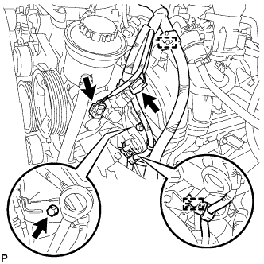

ГИДРАВЛИЧЕСКИЙ КЛАПАН ИЗМЕНЕНИЯ ФАЗ > СНЯТИЕ |
| 1. СНИМИТЕ ГИДРАВЛИЧЕСКИЙ КЛАПАН ИЗМЕНЕНИЯ ФАЗ В СБОРЕ |
|  |
Расцепите 2 зажимов и отсоедините 2 разъема.
Выверните болт и снимите кронштейн зажима жгута проводов.
 |
Отсоедините разъем гидравлического клапана изменения фаз.
Выверните болт и снимите гидравлический клапан изменения фаз в сборе.
Снимите кольцевое уплотнение с гидравлического клапана изменения фаз.